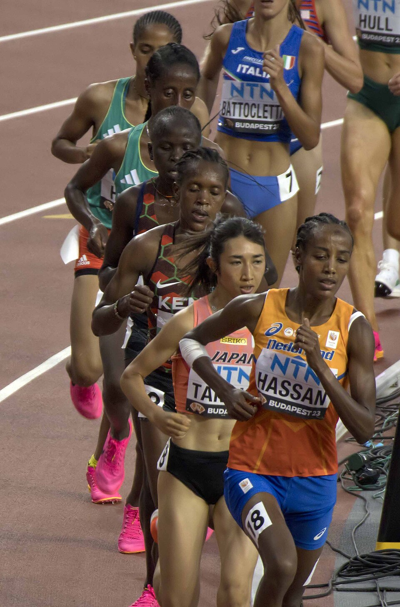

陸上競技
•
陸上 / 女子1500m / 5000m
たなか のぞみ
田中 希実
Nozomi Tanaka
🏢 所属: New Balance
🏅 東京五輪1500m 8位入賞🏅 1000m/1500m/3000m/5000m日本記録保持者
自らペースを刻むアグレッシブな走りで世界の常識を覆す、日本中距離界のフロンティア
経歴・これまでの歩み
西脇工業高校から同志社大学へ進み、豊田自動織機を経てプロ転向。父がコーチ、母も実業団ランナーという陸上一家に育つ。東京五輪1500mでは日本女子初の決勝進出を果たし8位入賞。1000m・1500m・3000m・5000mの4種目で日本記録を保持し、海外グランプリにも果敢に参戦し続ける。
主要大会ハイライト戦績
2024年
パリオリンピック
1500m / 5000m 出場
2023年
ブダペスト世界陸上
女子5000m 8位入賞（14分37秒98 日本新）
2021年
東京オリンピック
女子1500m 8位入賞（3分59秒19 日本新）
2023年
杭州アジア大会
女子1500m 銀メダル
プレイスタイル＆世界を制する武器
ハイペースを恐れず自ら先頭に立ってレースを支配する積極性と、終盤の苦しい局面でさらに一段ギアを上げる鋼のメンタリティが身上。研ぎ澄まされたストイックなフォームが特徴です。
専門家・メディアによる客観的分析・批評
✨
強み・世界トップ水準の評価
自らハイペースを刻み、海外の強豪アフリカ勢の集団を崩しにかかる攻撃的なレーススタイルは日本の女子中長距離界の常識を覆したと高く評価されています。
出典・ソース:
金哲彦氏（陸上解説者） / 増田明美氏
⚠️
課題・懸念される客観的事実
年間を通じたレース出場数が極めて多く、連戦による疲労蓄積と大一番でのピークコントロールの難しさ、ラスト100mのスパート合戦での絶対的キック力強化が課題とされます。
出典・ソース:
スポーツナビ陸上コラム / 陸上学会ディスカッション
愛知・名古屋2026への決意とメッセージ
大会スケジュール＆観戦のツボ
🗓️ 出場予定日程・会場
2026年9月29日 1500m決勝 / 10月3日 5000m決勝（パロマ瑞穂スタジアム）
👀 観戦の注目ポイント
中長距離の駆け引きを壊すハイペースな展開と、ラスト1周の鐘が鳴ってからの執念のスパート合戦が見逃せません。